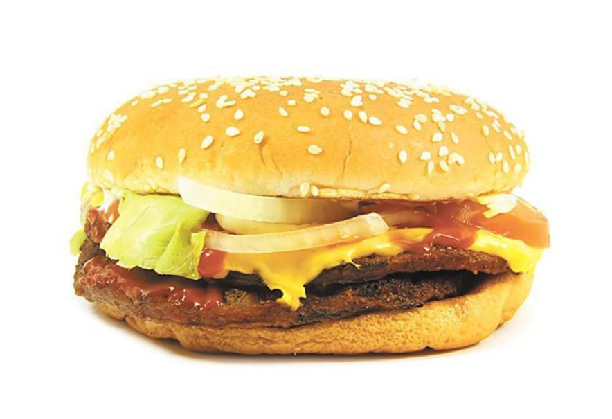

Responsive Website
viewport meta tag
CSS RElative Unite
Bosy max width and horizontal center align
image fluid
two colum flex and use media query with flez direction colum
Multi column: grid layout
menu responsive: will need javascript
